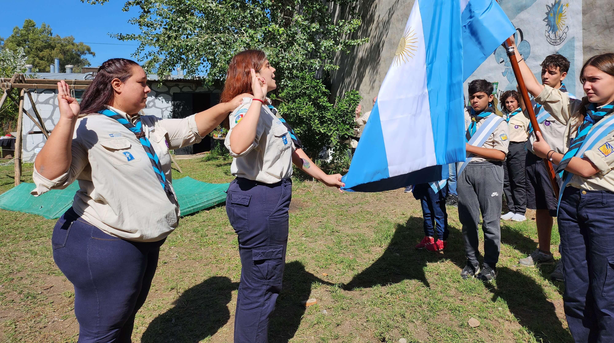
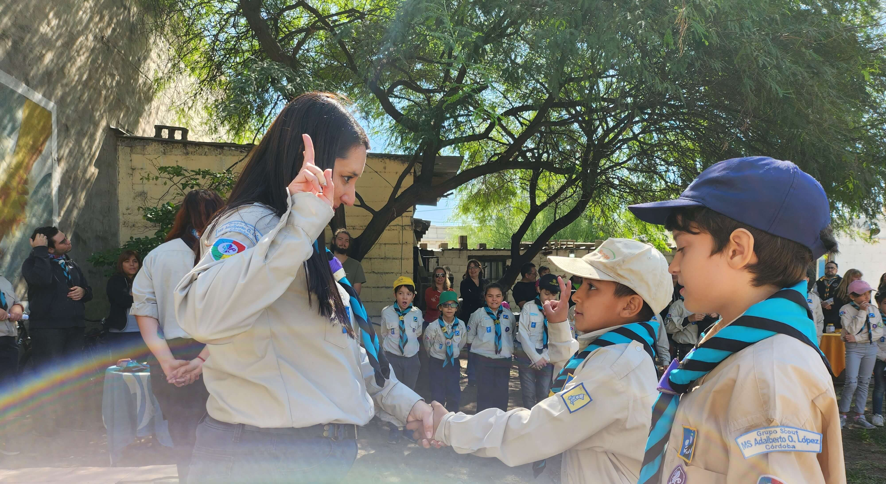
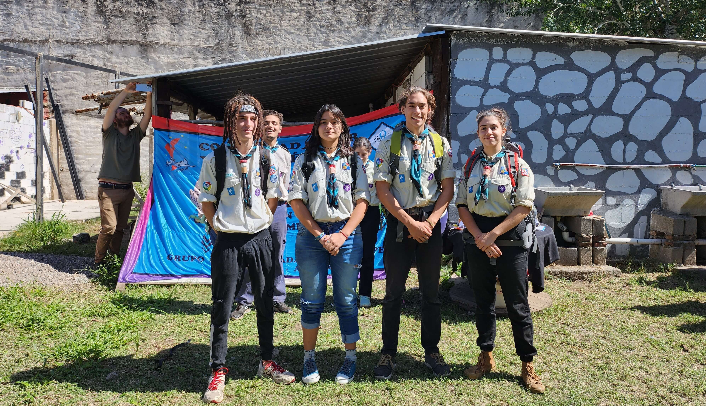
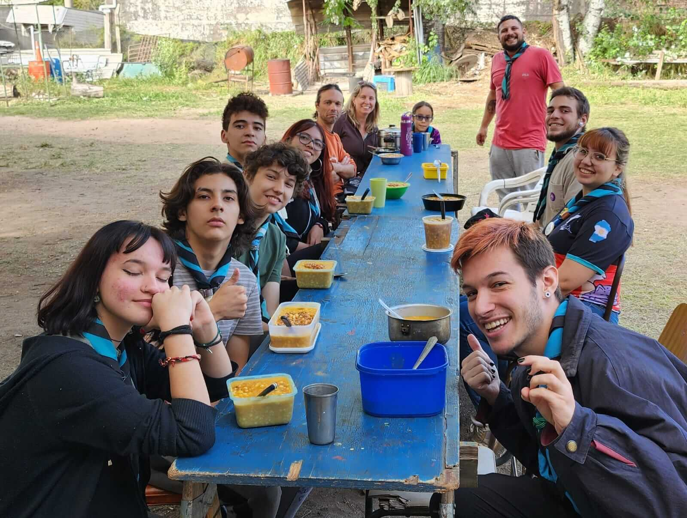

Esta es la página web del grupo scout n°494, Ms Adalberto Lopez, perteneciente
a scout de argentina Donde vas a poder encontrar toda
la información sobre la actividad del grupo, novedades e información sobre el moviento scout

Reafirmacion de promesa
Nuestra jefa de grupo, Margay protectora (Camila Andjel) realizó su reafirmación de
promesa como jefa de grupo.

Primeros pasos en los scouts
Los lobatos y lobeznas de nuestro grupo, comenzaron a dar sus primeros pasos en el
movimiento scout.

Pases de rama
Este año comenzó con pases de rama para todas las edades, lo que significa un cambio
grande en la vida de todos los/las jóvenes que integran nuestro grupo.

Locro scout
El 25 de mayo pudimos compartir un locro con todas las ramas luego de un día largo de
ventas.